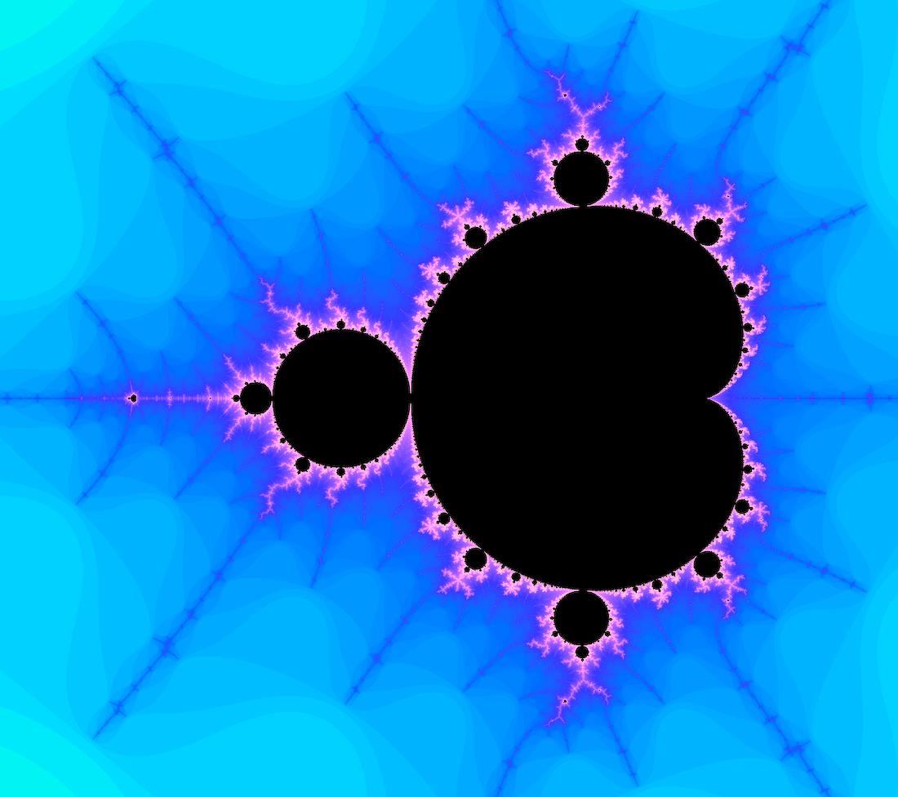
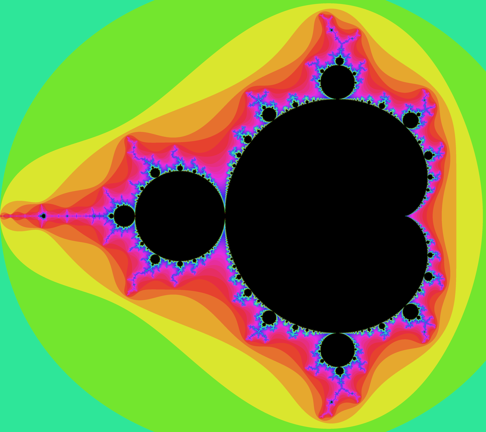

Visualizing the Mandelbrot Set Using Python
May 14, 2019
The Mandelbrot Set is known to be one of the most beautiful fractals in mathematics. Though first discovered at the beginning of the 20th century, we can use computers to create detailed renderings of the infinately self-similar image.
Equally as beautiful is the fact that we can render the Mandelbrot set with less than 50 lines of Python.
Prerequisites
- Python
- That's it
Plan
- Understand underlying math
- Impliment rendering algorithm
What even is the Mandelbrot Set?
The formal definition of the Mandelbrot Set is "set of values of c in the complex plane for which the orbit of 0 under iteration of the quadratic map

remains bounded..."
What does this mean?
Basically, take a complex number a + bi, square it, then add itself. Now take the solution, square it, then add the original number. As you repeat this process, the solution may approach infinity (diverge). On the other hand, the solution after continual iteration may stay bounded to finite numbers.
The black regions of the Mandelbrot Set are the complex numbers that when iterated over by the function, stay bounded. Where the Mandelbrot set gets really interesting is understanding the behavior near these points by visualizing at what rate the function diverges.
Math Breakdown
Can computers even understand complex numbers?
Not exactly, but we can represent complex numbers through their real and imaginary components (a + bi becomes a,b as x,y). Computations with each component are done separately, meaning we can omit the i if we think ahead.
How do I square complex numbers?
Take an arbitrary complex number, a + bi
(a + bi)^2
a^2 + 2abi - b^2
(a^2 - b^2) + (2ab)i
Really, the square of (a + bi) is another imaginary number, where the new a is (a^2 - b^2) and the new b is (2ab). This concept is crucial to this project's calculations.
How do I know when the function diverges?
It is known that if the function's complex solution is ever greater than two, the function must diverge. In cartesian terms, this means that the function diverges when the distance from the origin is greater than two. Using the Pythagorian theorem, we can define this case as:
x^2 + y^2 > 4
Setting Up the Program
Let's take this step by step.
First, we import our dependencies and modules. Pillow is Python's well known image processing library. Colorsys and math are modules we'll use in our calculations. Finally, we can access os to open the image file once written.
Next, we define the frame for our image. Variable meanings are self explanatory. "Precision" is the threshold (max number of iterations) we will use in termining if a point diverges under iteration. Increasing this value will create more accurate calculations and images, while increase processing time.
Base on the previous parameters, we can computer basic information we'll need later on.
Time to create our Image object. Using PIL's Image class, we can create a new image with desired dimensions and a black background. Then, we extract the pixels into an array we can directly manipulate with color changes.
Mandelbrot Rendering Algorithm
This algorithm is often called the "escape time algorithm," since we find how many iterations are needed for a point to definitively diverge. Then, we color the image based on this value.
We loop through the image's pixels, and map each pixel to a cartesian point (x,y). The original x and y values are stored for later use.
Them, we can iterate through the Mandelbrot Set's core function, waiting for when the distance from the origin is greater than 2. If the number of iterations, i, is equal to precision, then we can assume that the function remains bounded at the point. If i is less than precision, the function diverges.
If a point does diverges under iteration, the corresponding pixel's color will be a dependent on how far iteration was conducted. We can compute the number of successful iterations as a proportion of our threshold, and feed this value to a color generator. Finally, we set that rgb color to the value of the pixel in the pixels array.
I created two coloring algorithms, though there are endless directions in which coloring can be taken. I made one coloring method that uses a log function, and one that uses a power function. Both functions take multiple parameters for ultimate customizability.
All that's left to do is to write the file, and then open it through the operating system.
Put it all together
Run the program, and gaze.
